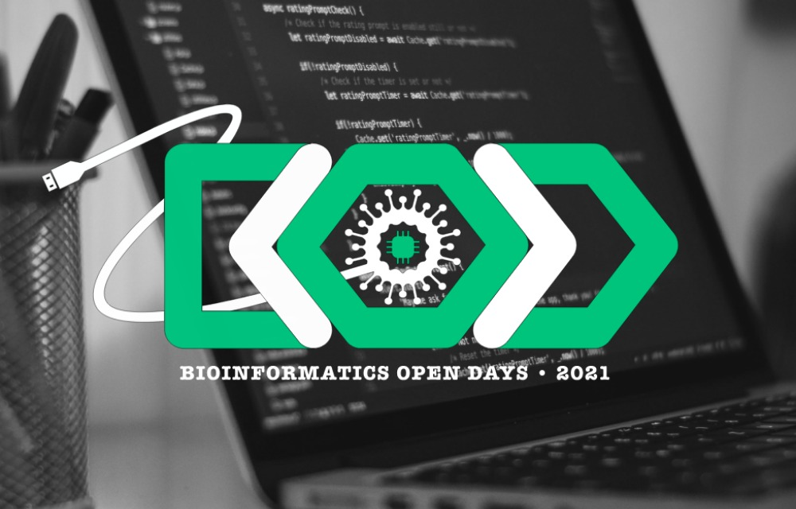

Events lectured
Warm-up sessions for the upcoming MYD edition, 30th November.
Three PhD students talk about their distinct PhD research, event inserted in the 2022 Science and Technology Week organised by PubhD, 24th November.

Machine learning - from statistics to artificial intelligence and back Hands-on session: machine learning in genomics and proteomics at PDBEB, March 1st
Computational Biology: Different computational biology fields, scientific research and funding, at "Áreas do Futuro", organised by NEBIOQ/AAC, December 13th
Data-driven Molecular Design: Importance of data interpretation and pipeline interpretability on artificial intelligence targeting biological problems, at BOD, Braga, May 5th-8th

Lecturer on the topic: the basics of machine learning for computational biology using orange at PDBEB, February 23rd
Machine Learning Basics with Orange - at the Meet.Lab. Lecture title: "Dados (Multi)ómicos – da genómica, transcriptómica e proteómica, à mais recente metabolómica, epigenómica e farmacogenómica”, organised by NEB/AAC, October 10th

Summer School in Computational Biology. Online lecture: "Dados (Multi)ómicos – da genómica, transcriptómica e proteómica, à mais recente metabolómica, epigenómica e farmacogenómica”, organised by NEB/AAC, September 10th
Doctoral Courses Courses 2019/2020 - Computational Biology PDBEB, February 24th
Invited debater for "AI integration in the future of Humanity", at the 3rd edition of MYD, organised by JEST, Coimbra, February 2nd

Lecturer of the six session workshop cycle "Python for Machine Learning", organised by Gomes & Canoso, Viseu, September 14th, October 19th, November 16th and December 14th

A Python workshop, by JEST. Python workshop with modules on introduction, visualization, data manipulation and machine learning, Coimbra, April, 17th, 19th, 24th and 29th

R workshop by JEST - Coimbra, November 28th, 29th, December 5th, 6th

Contact
If you wish to contact me please do it through the form below.